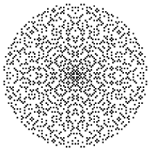
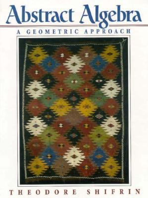

MATH 4000/6000: Modern Algebra & Geometry I
Fall 2015

MWF 12:20 PM-1:10 PM, Boyd Graduate
Studies Building, Room 222
Instructor: Paul
Pollack
|
Current assignments/other course material
|
- Final exam review [PDF]
- Exam #3 review [PDF]
- HW #8 [PDF]; due 11/16
- Exam #2 review [PDF]
- HW #7 [PDF]; due 10/26
- HW #6 [PDF]; due 10/19
- HW #5 [PDF]; due
10/9 10/12
- Exam #1 review [PDF]
- HW #4 [PDF]; due 9/21
- HW #3 [PDF]; due 9/14
- HW #2 [PDF]; due 9/4
- HW #1 [PDF]; due 8/28
|
Semester-to-date summary (reverse chronological order)
|
- 12/8: Course summary
- 12/7: Intersection points of "basic lines" and "basic circles"
lie in the original field or a field obtaining by adjoining a square root of a positive element.
Completion of the proof that the chain-of-fields criterion for constructibility is necessary.
Proof that if $\alpha$ is constructible, then $[\mathbb{Q}[\alpha]:\mathbb{Q}] =2^j$
for some nonnegative integer $j$. Examples of non-constructible numbers.
- 12/4: A point $(x,y)\in \mathbb{R}^2$ is constructible if and only if $x$ and $y$ are constructible numbers. The constructible points form a subfield of $\mathbb{C}$. Gauss's construction of the $17$-gon given his "miraculous" expression for $\cos(2\pi/17)$. Statement of Gauss's necessary and sufficient condition for the constructibility of the regular $n$-gon. Start of discussion of impossible constructions.
- 12/2: Completion of proof that constructible numbers form a subfield of $\mathbb{R}$. Proof that constructible numbers are closed under taking positive square roots. Sufficient condition for constructibility in terms of chains of fields.
- 11/30: Constructibility: Basic definitions. All $x \in \mathbb{Z}$ are constructible. Given a point $P$ and a line $\ell$, we can construct the line through $P$ perpendicular to $\ell$, and the line through $P$ parallel to $\ell$. Given $\alpha >0$ constructible, a point $P$ and a line $\ell$, we can contruct the points on $\ell$ at a distance $\alpha$ from $P$. Start of the proof that the constructible numbers form a field.
- 11/20: Midterm #3
- 11/18: If $K/F$ is a degree $n$ extension of fields, then each $\alpha \in K$ is the root of some nonzero polynomial
in $F[x]$, and its minimal polynomial has degree dividing $n$. If $[F[\alpha]: F]$ and $[F[\beta]:F]$ are
relatively prime, then $[F[\alpha,\beta]:F]=[F[\alpha]:F][F[\beta]:F]$. Related examples. Use of degree arguments to prove that every finite field has size $p^n$
for some prime $p$ and some positive integer $n$.
- 11/16: More review of linear algebra (span, linear independence, bases). Definition of $[K:F]$ for a field extension $K/F$.
$[F[\alpha]:F]$ has degree $n$ if $\alpha$ is the root of a degree $n$ irreducible polynomial over $F$. Proof that if $L/K$ and $K/F$ are finite extensions, then $[L:F]=[L:K][K:F]$.
- 11/13: A prime in $\mathbb{Z}$ stays prime in $\mathbb{Z}[i]$ if and only if $p$ is not of the form $x^2+y^2$ for any $x,y\in\mathbb{Z}$.
If $p\equiv 3\pmod{4}$, then $p$ is not of the form $x^2+y^2$. If $p\equiv 1\pmod{4}$, then $p$ is not prime in $\mathbb{Z}[i]$. (Quasi)review of vector spaces.
- 11/11: Existence of splitting fields. Division algorithm in $\mathbb{Z}[i]$, gcds in $\mathbb{Z}[i]$, Euclid's lemma and unique factorization in $\mathbb{Z}[i]$. Examples of primes in $\mathbb{Z}[i]$. Every prime in $\mathbb{Z}[i]$ divides a prime in $\mathbb{Z}$.
- 11/9: If $f(x) \in F[x]$ is irreducible, then $F[x]/\langle f(x)\rangle$ is a field containing $F$ in which $f$ has a root. Examples. Proof that if $f(x) \in F[x]$ is any nonconstant polynomial, then there is an extension $K/F$ over which $f$ splits.
- 11/6: Proof of the Fundamental Homomorphism Theorem.
Examples. Introduction to the problem of constructing splitting fields.
- 11/4: Isomorphism is symmetric, reflextive, transitive. Definition of direct product of rings.
If $m$ and $n$ are coprime positive integers, then $\mathbb{Z}_{mn} \cong \mathbb{Z}_m \times \mathbb{Z}_n$. Isomorphisms preserve units and zero divisors.
Statement of the Fundamental Homomorphism Theorem.
- 11/2: More examples of $R/I$: $\mathbb{Z}_2[x]/(x^2+x+1)$, $\mathbb{Z}_2[x]/(x^2)$. Definition of isomorphism and simple examples. A homomorphism is one-to-one if and only if the kernel is trivial.
- 10/28: Midterm #2
- 10/26: Review of the construction of $\mathbb{Z}_m$. Construction of the quotient ring $R/I$, where $I$ is an ideal of the commutative ring $R$. Initial examples of quotient rings.
- 10/23: Proof that all ideals of $F[x]$ are principal. An ideal of $\mathbb{Z}$ that contains a prime is either $\mathbb{Z}$ or $\langle p\rangle$;
the analogous statement for $F[x]$.
Definition of the minimal polynomial of $\alpha$ over $F$. Examples of minimal polynomials.
- 10/21: Definition of a ring homomorphism, with several examples from earlier in the class. Homomorphisms send $0_R$ to $0_S$, and have image a subring of $S$.
Definition of the kernel of a homomorphism. Definition of an ideal of a commutative ring. Proof that $\mathbb{Z}$ is a principal ideal domain.
- 10/19: More on proving irreducibility by reduction mod $p$. Eisenstein's irreducibility criterion. Proof of Gauss's lemma.
- 10/16: Rational root test and its application to testing degree $2$ and $3$ polynomials in $\mathbb{Q}[x]$ for irreducibility. Gauss's lemma. Two proofs that $x^4+x+3$ is irreducible, using (a) the method of undetermined coefficients, (b) reduction modulo $2$.
- 10/14: $F[\alpha]$ is a field whenever $\alpha$ is the root of a nonconstant polynomial over $F$. Definition of a polynomial splitting completely, and of $K$ being a splitting field for $f(x)\in F[x]$ over $F$. Examples of splitting fields.
- 10/12: Proof of the Fundamental Theorem of Algebra. Definition of subfield/field extension/the notation $K/F$. Definition of $F[\alpha]$; characterization of $F[\alpha]$ as smallest subring of $K$ containing $F$ and $\alpha$. Examples (including $\mathbb{R}[i]$ and $\mathbb{Q}[\sqrt{2}]$).
- 10/9: Let $f \in F[x]$ with $\deg{f} \ge 2$; if $f$ has a root, then $f$ is not irreducible, and converse holds if $\deg{f} =2$ or $3$. Examples of irreducibles. Statement of unique factorization in $F[x]$. Euclid's lemma for $F[x]$. Sketch of proof of unique factorization. Statement of fundamental theorem of algebra; consequence that each $f(x) \in \mathbb{C}[x]$ has the form $c(x-\alpha_1)\cdots (x-\alpha_n)$. Definition of the multiplicity of a root.
- 10/7: Euclidean algorithm in $F[x]$, with $F$ a field. Basic definitions concerning divisibility in general commutative rings, including the general definition of the gcd. Existence of gcds whenever the Euclidean algorithm terminates (e.g., for every pair of elements in $F[x]$). Definition of irreducibles in $F[x]$.
- 10/5: Definition of $R[x]$ for $R$ a commutative ring. $R[x]$ is a domain if and only if $R$ is a domain. $\deg(ab) = \deg(a) + \deg(b)$ when $R$ is a domain. If $R$ is a domain, then the units in $R[x]$ coincide with the units in $R$. The division theorem in $R[x]$ (when the leading coefficient of the divisor is a unit).
- 10/2: Solving cubic equations over $\mathbb{C}$. A worked example. Information on the roots of $z^3+pz+q$ encoded by $\Delta=\frac{q^2}{4} + \frac{p^3}{27}$.
- 9/30: de Moivre's theorem, there are $n$ distinct complex $n$th roots of $1$, any nonzero complex number has $n$ distinct $n$th roots, statement of fundamental theorem of algebra, solving linear and quadratic equations over $\mathbb{C}$
- 9/28: Definition of $\mathbb{C}$. $\mathbb{C}$ is a ring. $\mathbb{C}$ admits an embedding of $\mathbb{R}$. $\mathbb{C}$ is a field. Complex conjugation is an automorphism of $\mathbb{C}$. Absolute value, including triangle inequality and $|zw|=|z||w|$. The polar form of a complex number. Multiplication of complex numbers in polar form.
- 9/25: Midterm #1
- 9/23: Definition of ordering on $\mathbb{R}^{+}$. Statement of the theorem that an ordered field which is Archimedean + Cauchy complete is complete (satisfies monotone convergence). Proof that $\mathbb{R}$ is Archimedean. Sketch of argument that $\mathbb{R}$ is Cauchy-complete.
- 9/21: Operations on $\mathbb{R}$. $\mathbb{R}$ is a ring that admits an embedding of $\mathbb{Q}$. Proof that $\mathbb{R}$ is a field.
- 9/18: Between any two elements of $\mathbb{Q}$ there is another. Proof that $\sqrt{n}$ is irrational whenever $n \in \mathbb{Z}$ is not a perfect square. Review of properties we want the real numbers $\mathbb{R}$ to have ($\mathbb{R}$ should be a complete ordered field). Definition of $\mathbb{R}$ as the set of equivalence classes of rational Cauchy sequences.
- 9/16: $\mathbb{Q}$ is a commutative ring. $\mathbb{Z}$ embeds into $\mathbb{Q}$: there is an injective operation-preserving map. $\mathbb{Q}$ is a field. Definition of the set of positive elements $\mathbb{Q}^{+}$ and verification that $\mathbb{Q}$ becomes an ordered field with this set of positive elements. Proof of the Archimedean property for $\mathbb{Q}$.
- 9/14: Definition of $\mathbb{Q}$ as set of ordered pairs $(a,b) \in \mathbb{Z}^2$ with $b\ne 0$, up to "cross multiplication equivalence". Definition of $+$ and $\cdot$ on $\mathbb{Q}$. Verification that $+$ and $\cdot$ are well-defined.
- 9/11: Verification of (most of) the ring axioms for $\mathbb{Z}_m$, definitions of the terms integral domain, field, proof that fields are integral domains. Proof that $\mathbb{Z}_m$ is an integral domain iff it is a field iff $m$ is prime. Characterization of units in $\mathbb{Z}_m$: $\bar{a}$ is a unit iff $\gcd(a,m)=1$.
- 9/9: Definition of a ring and familiar examples, basic algebraic facts true in every ring (including the binomial theorem as holding in every commutative ring), brief discussion of the zero ring, definition of $\mathbb{Z}_m$, addition and multiplication on $\mathbb{Z}_m$ including a proof that these operations are well-defined
- 9/7: Labor day (no class)
- 9/4: Solving simultaneous congruences, including statement and proof of the Chinese remainder theorem. Examples.
- 9/2: Inverses modulo $m$ and cancelation. Solving linear congruences $ax\equiv b\pmod{m}$.
- 8/31: Addition and multiplication preserve congruences, applications (test for divisibility by 9, each Pythagorean triple contains a multiple of 3), Fermat's little theorem
- 8/28: Uniqueness half of unique factorization theorem. Binomial coefficients ${p \choose k}$ are divisible by $p$ when $p$ is prime and $1\le k\le p-1$. Definition of congruence mod $m$. Congruence mod $m$ is an equivalence relation. For each fixed $m \in \mathbb{Z}^{+}$, every $a \in \mathbb{Z}$ is congruent to exactly one of $0, 1, 2, \dots, m-1$ modulo $m$.
- 8/26: Properties of $\gcd$, including that $\gcd(da,db) = d\gcd(a,b)$ (as long as $d>0$), and that every common divisor of $a,b$ divides $\gcd(a,b)$. Euclid's lemma. Statement of unique factorization, and proof of existence of factorizations into primes. Proof that there are infinitely many primes.
- 8/24: Formal definition of $a$ divides $b$ and basic properties, definition of $\mathrm{CD}(a,b)$ (the set of common divisors) and $\gcd(a,b)$, computing $\gcd(a,b)$ by the Euclidean algorithm
- 8/21: Exponentiation, proof of binomial theorem, even vs odd integers, statement and proof of the division theorem
- 8/19: Order properties of $\mathbb{Z}$, well-ordering principle, no integers between 0 and 1, induction as a consequence of well-ordering, statement (but not proof!) that our properties characterize $\mathbb{Z}$
- 8/17: Review of syllabus, properties of $\mathbb{Z}$
At this point in your mathematical career, you have accumulated a wealth of experience computing with integers, real numbers, and complex numbers. These items are so familiar to you that they may even have the appearance of being God-given --- as if understanding those objects is What Mathematics is All About.
Abstract algebra challenges this notion. Integers, real numbers, and complex numbers are indeed fantastic, but they are fantastic not because they are handed down from on high, but because they have a rich and (presumably) consistent theory with useful consequences. And given how useful these objects are, we are compelled to isolate (and consider in the abstract) their most important properties. Once we do so, we find that there are many other objects with the same sorts of interesting properties. For example, we will see that the integers are an example of what is called a ring, while the real numbers and complex numbers are fields. These more abstract-seeming objects are not just interesting in an intellectual let's-talk-about-this-over-coffee kind of way, but understanding them deeply often leads to a new understanding of the objects of original interest.
Let me give one concrete example: Some primes, like 5, can be written as a sum of two squares: 5 = 1^2 + 2^2. And other primes, like 3, cannot. The question of when this is possible is a question about the integers. But our answer to this question --- and we will answer it by the end of the semester --- will require us to visit a totally different mathematically system, the ring of Gaussian integers. This is all connected with the picture at the top of the syllabus, in a way I will leave mysterious for now.

Abstract algebra: A geometric approach
by Ted Shifrin (Amazon link)
A list of errata/typos is also available.
We will aim to cover Chapters 1--4 and to start Chapter 5. For further adventures in Algebra-land, I encourage you to take MATH 4010 in the Spring.
|
Attendance/Homework/Exam Policies
|
There will be three hour-long in-class exams, as well as a final exam.
- Midterm #1: Friday, September 25
- Midterm #2: Wednesday, October 28
- Midterm #3: Friday, November 20
- Final exam: Monday, December 14, 12:00 PM--3:00 PM, usual classroom
No make-up exams will be given. The final exam is cumulative.
Your grade is made up of the following weighted components:
- Each midterm: 15% (total of 45%)
- Homework: 25%
- Final exam: 30%
This class falls into the interactive lecture genre (not entirely unrelated to the practice of call and response in a liturgical context). What this means is that I intend to punctuate the lectures frequently with questions for you. For the show to go on, class participation is absolutely essential. Since you cannot participate in class if you are not present in class, your attendance is required. In particular, more than four unexcused absences may result in you being automagically withdrawn from the class. Of course, missing class is sometimes a necessity; keep me posted whenever you have a conflict and we should not have any issues.
Homework will be collected roughly once each week. As a general rule, late homework assignments are not accepted. Your lowest HW score will be dropped at the end of the semester.
All exams are closed book and closed notes.
Students enrolled in MATH 6000 will take the same exams as the students in MATH 4000 but will be assigned additional homework problems.
You are not only allowed, but encouraged to collaborate with your classmates on the homework assignments. The joy of mathematical discovery was meant to be shared! Having said that, collaboration does not mean copying. You may not copy solutions from a textbook, classmate, website, etcetera, and you must be the one to handwrite (or type) your solutions. By entering UGA, you have already agreed to abide by the UGA honor code described in detail at <URL: https://ovpi.uga.edu/academic-honesty/academic-honesty-policy>. A good rule of thumb is that you should be able to explain any work you turn in to a hypothetical interrogator.
Students with disabilities who may require
special accommodations should talk to me as soon as possible.
Appropriate documentation concerning disabilities may be required.
For further information, please visit the Disabilities Resource
Center page at <URL: http://drc.uga.edu/>.
This course syllabus provides a general plan for the course;
deviations may be necessary.
Click here
to go to the main page of the math department